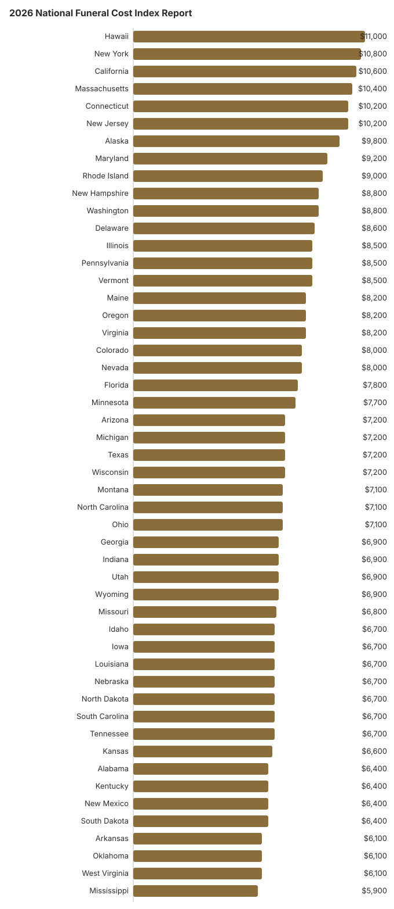
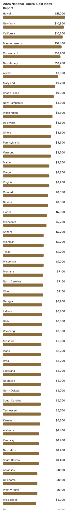

2026 National Funeral Cost Index Report
Complete 50-State Pricing Data with Regional Breakdowns
Last updated: November 19, 2026 · Official medians: NFDA 2023 General Price List Study
National Averages Summary
Two kinds of national figures appear in this report, and they are not interchangeable. The $8,300 and $6,280 amounts are official NFDA 2023 nationwide package medians for a funeral with viewing and burial and a funeral with viewing and cremation. They are not 2026 medians. The other amounts below are 50-state averages from our 2026 National Funeral Cost Index. They are clearly labeled as index averages, not official NFDA medians.
Complete 50-State Funeral Cost Data (2026)
The table below is the 2026 National Funeral Cost Index, listed in the same order and with the same dollar amounts as the index page and the downloadable CSV. The three compared cost columns are Traditional Funeral, Cremation w/ Service, and Direct Cremation. Burial plot and estimated cremation rate are included so the printable table matches the published spreadsheet row for row.
Every dollar amount in the state columns is an editorial 2026 estimate from the sources and steps under Data Sources & Methodology. It is not drawn from an NFDA state survey. The only official NFDA cost figures used in this release are the 2023 nationwide package medians of $8,300 and $6,280.
| Rank | State | Traditional Funeral | Cremation w/ Service | Direct Cremation | Burial Plot | Estimated Cremation Rate |
|---|---|---|---|---|---|---|
| 1 | Hawaii | $11,000 | $8,200 | $3,000 | $5,500 | 70% |
| 2 | New York | $10,800 | $8,000 | $2,600 | $5,400 | 55% |
| 3 | California | $10,600 | $7,800 | $2,200 | $5,200 | 65% |
| 4 | Massachusetts | $10,400 | $7,800 | $2,500 | $5,200 | 58% |
| 5 | Connecticut | $10,200 | $7,600 | $2,400 | $5,000 | 52% |
| 5 | New Jersey | $10,200 | $7,600 | $2,400 | $5,000 | 48% |
| 7 | Alaska | $9,800 | $7,200 | $2,800 | $4,500 | 72% |
| 8 | Maryland | $9,200 | $7,000 | $2,200 | $4,600 | 55% |
| 9 | Rhode Island | $9,000 | $7,000 | $2,200 | $4,400 | 58% |
| 10 | New Hampshire | $8,800 | $6,800 | $2,100 | $4,400 | 72% |
| 10 | Washington | $8,800 | $6,800 | $2,100 | $4,200 | 76% |
| 12 | Delaware | $8,600 | $6,800 | $2,000 | $4,200 | 55% |
| 13 | Illinois | $8,500 | $6,600 | $2,000 | $4,200 | 52% |
| 13 | Pennsylvania | $8,500 | $6,600 | $2,000 | $4,200 | 52% |
| 13 | Vermont | $8,500 | $6,600 | $2,000 | $4,200 | 72% |
| 16 | Maine | $8,200 | $6,400 | $1,900 | $4,000 | 75% |
| 16 | Oregon | $8,200 | $6,400 | $1,900 | $3,800 | 78% |
| 16 | Virginia | $8,200 | $6,400 | $1,900 | $4,000 | 50% |
| 19 | Colorado | $8,000 | $6,200 | $1,800 | $3,800 | 72% |
| 19 | Nevada | $8,000 | $6,200 | $1,800 | $3,800 | 72% |
| 21 | Florida | $7,800 | $6,200 | $1,800 | $3,600 | 62% |
| 22 | Minnesota | $7,700 | $6,000 | $1,800 | $3,600 | 62% |
| 23 | Arizona | $7,200 | $5,800 | $1,600 | $3,400 | 68% |
| 23 | Michigan | $7,200 | $5,800 | $1,700 | $3,400 | 58% |
| 23 | Texas | $7,200 | $5,800 | $1,700 | $3,400 | 48% |
| 23 | Wisconsin | $7,200 | $5,800 | $1,700 | $3,400 | 58% |
| 27 | Montana | $7,100 | $5,600 | $1,600 | $3,200 | 72% |
| 27 | North Carolina | $7,100 | $5,600 | $1,700 | $3,200 | 48% |
| 27 | Ohio | $7,100 | $5,600 | $1,700 | $3,400 | 55% |
| 30 | Georgia | $6,900 | $5,600 | $1,700 | $3,200 | 45% |
| 30 | Indiana | $6,900 | $5,600 | $1,600 | $3,200 | 48% |
| 30 | Utah | $6,900 | $5,600 | $1,600 | $3,200 | 42% |
| 30 | Wyoming | $6,900 | $5,600 | $1,600 | $3,200 | 65% |
| 34 | Missouri | $6,800 | $5,500 | $1,600 | $3,100 | 52% |
| 35 | Idaho | $6,700 | $5,400 | $1,500 | $3,000 | 65% |
| 35 | Iowa | $6,700 | $5,400 | $1,500 | $3,000 | 50% |
| 35 | Louisiana | $6,700 | $5,400 | $1,700 | $3,200 | 35% |
| 35 | Nebraska | $6,700 | $5,300 | $1,500 | $3,000 | 50% |
| 35 | North Dakota | $6,700 | $5,300 | $1,500 | $3,000 | 55% |
| 35 | South Carolina | $6,700 | $5,400 | $1,600 | $3,000 | 45% |
| 35 | Tennessee | $6,700 | $5,400 | $1,600 | $3,000 | 42% |
| 42 | Kansas | $6,600 | $5,300 | $1,500 | $2,900 | 50% |
| 43 | Alabama | $6,400 | $5,200 | $1,800 | $3,200 | 38% |
| 43 | Kentucky | $6,400 | $5,200 | $1,600 | $3,000 | 40% |
| 43 | New Mexico | $6,400 | $5,200 | $1,500 | $2,800 | 65% |
| 43 | South Dakota | $6,400 | $5,200 | $1,500 | $2,800 | 52% |
| 47 | Arkansas | $6,100 | $5,000 | $1,500 | $2,800 | 42% |
| 47 | Oklahoma | $6,100 | $5,000 | $1,400 | $2,700 | 45% |
| 47 | West Virginia | $6,100 | $5,000 | $1,400 | $2,700 | 48% |
| 50 | Mississippi | $5,900 | $4,800 | $1,400 | $2,600 | 28% |


Note: The traditional funeral, cremation with service, and direct cremation columns do not include cemetery charges such as a vault, headstone, or opening and closing the grave. The burial plot column is the index’s plot average for that state, shown separately and not already added into the funeral totals.
Regional Breakdown
These regional figures are the published 2026 National Funeral Cost Index regional averages, copied here so the printable report matches the index. They are not a new four-region recalculation. State counts are shown as published; this report does not add an unpublished state-by-state region roster.
| Region | States | Trad. Funeral | Cremation | Direct Crem. | Burial Plot | Crem. Rate | vs. National |
|---|---|---|---|---|---|---|---|
| Northeast | 11 | $9,309 | $7,109 | $2,209 | $4,600 | 59.3% | +20.3% |
| West | 7 | $9,086 | $6,914 | $2,200 | $4,343 | 71.6% | +17.5% |
| Midwest | 12 | $7,042 | $5,617 | $1,633 | $3,250 | 53.5% | −9.0% |
| Mountain | 6 | $7,000 | $5,600 | $1,600 | $3,200 | 63.5% | −9.5% |
| South | 14 | $6,736 | $5,429 | $1,629 | $3,114 | 44.0% | −12.9% |
| 50-state average | 50 | $7,736 | $6,072 | $1,834 | $3,656 | 55.8% | — |
Key Regional Observations
- Most expensive state: Hawaii, at $11,000 for a traditional funeral in the published table. Hawaii is also at the top of the table for cremation with a service ($8,200) and for direct cremation ($3,000).
- Least expensive state: Mississippi, at $5,900 for a traditional funeral. Mississippi is also at the bottom of the table for cremation with a service ($4,800). The low figure for direct cremation is $1,400, in Mississippi, Oklahoma, and West Virginia.
- Largest spread: The gap between Hawaii and Mississippi for a traditional funeral is $5,100, which is why a state figure is more useful than a single national number.
- Regional pattern: The Northeast average of $9,309 sits 20.3% above the 50-state traditional-funeral average of $7,736. The South average of $6,736 sits 12.9% below it.
Cremation vs. Burial Cost Comparison
Cremation has become the more common disposition method in the United States. According to NFDA’s 2025 Cremation & Burial Report, the projected U.S. cremation rate for 2025 is 63.4%. On official 2023 package medians, a funeral with viewing and cremation ($6,280) is $2,020 less than a funeral with viewing and burial ($8,300). In our 2026 index averages, cremation with a service ($6,072) is $1,664 less than a traditional funeral ($7,736), and direct cremation ($1,834) is $5,902 less than a traditional funeral.
| Arrangement | Official NFDA 2023 Package Median | Our 2026 50-State Index Average |
|---|---|---|
| Funeral with viewing and burial | $8,300 | $7,736 |
| Funeral with viewing and cremation | $6,280 | $6,072 |
| Direct cremation | — | $1,834 |
| Burial plot | — | $3,656 |
The official 2023 package medians do not include cemetery charges. The index burial-plot average of $3,656 is an additional item, not part of the $8,300 or $7,736 funeral figures. For a line-item look at the 2023 national package, see the funeral cost breakdown.
Methodology & Sources
How to read the state figures: The methods note directly above the 50-state table applies to every state dollar amount in this printable report. Those state amounts are our 2026 estimates. They are not a funeral-home survey, and they are not official NFDA state numbers.
Official national benchmarks: The $8,300 and $6,280 figures come from the NFDA 2023 General Price List Study. They are nationwide package medians, not 2026 medians, and not official state-by-state NFDA numbers.
Index averages: The 50-state averages of $7,736 for a traditional funeral, $6,072 for cremation with a service, $1,834 for direct cremation, and $3,656 for a burial plot, as well as the five regional rows, come from the 2026 National Funeral Cost Index. Each of those figures is an index average, labeled as such, rather than an official NFDA median.
Sources for the estimates: The index estimates start from publicly available inputs, including NFDA’s published national studies, Funeral Consumers Alliance materials, state funeral-board information, FTC General Price List rules, and BLS funeral-expense CPI trends. A longer account of those steps lives on the index page under Data Sources & Methodology.
Limitations: These figures are planning references, not a price quote from any funeral home. Costs vary by funeral home, by city or rural area, and by the services a family chooses. Request a General Price List from any funeral home you are considering.
Citation Information
This report may be cited in academic papers, consumer advocacy publications, news articles, and professional reports. Please include the URL and retrieval date when citing online. For questions about data or methodology, visit our contact page.
Related Resources
- Funeral Costs by State: Interactive state-by-state cost data with detailed breakdowns
- Funeral Cost Breakdown: Every fee explained line by line
- Cremation vs. Burial Cost Guide: Detailed comparison of disposition options
- Funeral Payment Assistance: Programs and resources for families who need financial help
- Funeral Planning Checklist: Step-by-step planning guide
- Funeral Cost Comparison Worksheet: Printable worksheet for comparing funeral home prices
Frequently Asked Questions
How Do I Save This Report as a PDF?
You can download a ready-made PDF of this report at funeral-cost-index-pdf.pdf. You can also use your browser’s built-in Print function by pressing Ctrl+P on Windows or Linux, or Cmd+P on Mac, and choose “Save as PDF” as the destination. Print styles hide the site header, footer, and navigation so the saved page is a clean document.
How Often Is the National Funeral Cost Index Updated?
The National Funeral Cost Index is reviewed and updated when new public benchmarks are published. The 2026 edition anchors to the most recent published national figures we cite: the NFDA 2023 General Price List Study (the latest edition with those package medians), CANA cremation statistics for 2025, and BLS price data through August 2026. The 50 state amounts are our editorial estimates, not a new funeral-home survey.
How Should I Cite This Report?
Yes. Please cite as: Funeral Cost & Burial Expense Analyzer. (2026). 2026 National Funeral Cost Index Report. Retrieved November 19, 2026, from https://funeralcostanalyzer.com/national-funeral-cost-index.html. When you cite a state amount, please note that it is our 2026 index estimate, not an official NFDA state figure.
Are the 50-State Costs in This Report Official NFDA Figures?
No. This report cites only two official NFDA cost figures: the 2023 nationwide package medians of $8,300 (viewing and burial) and $6,280 (viewing and cremation). Each of the 50 state costs is our 2026 editorial estimate. None of those state rows is a surveyed NFDA state ranking.